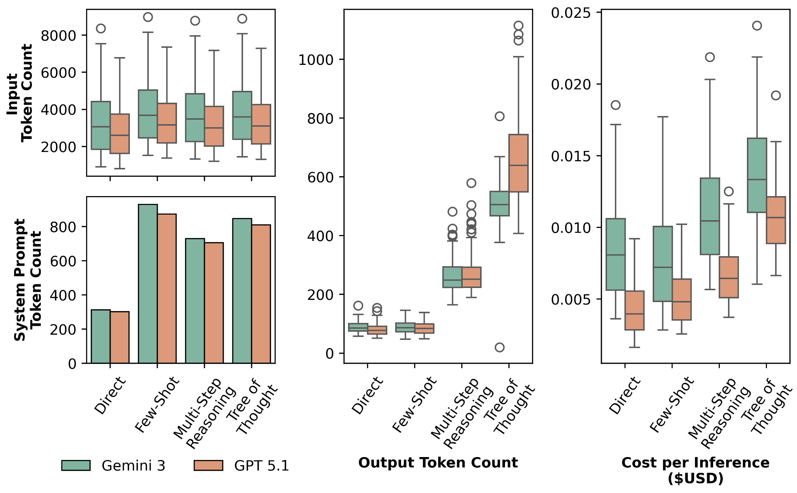

A Reference-Free Hallucination Detection for
Context Misalignment in Code Review Automation
Kla Tantithamthavorn1 · Hong Yi Lin2 · Patanamon Thongtanunam2 · Wachiraphan Charoenwet2 · Minwoo Jeong3 · Ming Wu3
1 Monash University · 2 The University of Melbourne · 3 Atlassian
A type of intrinsic error (contradiction with the input), where comments maybe syntactically valid and stylistically appropriate, but semantically inconsistent with the actual code change.
THE CODE DIFF UNDER REVIEW
THE GENERATED CODE REVIEW COMMENT
Measure lexical overlap, not semantic grounding. Requires a gold reference comment that rarely exists. Cannot evaluate generated code reviews that deviate from the gold reference.
Have been shown in past studies to perform poorly at detecting hallucinations in generated code review comments.
Expensive, subjective, and difficult to reproduce at scale.
An operational rubric to help the Judge reason through the decision.
All reference-free — they differ in reasoning depth versus cost.
Out-of-the-box reasoning with system + user prompt only. Lowest cost.
Five labeled examples - one per score level (0–4) to sharpen decision boundaries.
Guided reasoning - comprehension, traceability, support, conflict & relevance, completeness, final judgment.
Four complementary hypothesis branches, then converge on the strongest evidence path.
This strategy explicitly instructs an LLM to explore multiple reasoning paths in parallel and evaluate hypotheses before reaching the conclusion. Instead of following a single linear reasoning chain, the model branches into several possible lines of thought, reflects on their validity, and selects the most coherent path.

| Judge | Model | Consistency | Coverage | Average |
|---|---|---|---|---|
| Tree of Thoughts | Gemini 3 Pro | 0.67 | 0.65 | 0.66 |
| Direct | Gemini 3 Pro | 0.69 | 0.65 | 0.67 |
| Few Shot | Gemini 3 Pro | 0.67 | 0.62 | 0.64 |
| Multi-Step Reasoning | Gemini 3 Pro | 0.68 | 0.63 | 0.65 |
| Tree of Thoughts | GPT-5 | 0.72 | 0.54 | 0.61 |
| Direct | GPT-5 | 0.69 | 0.54 | 0.61 |
| Multi-Step Reasoning | GPT-5 | 0.70 | 0.57 | 0.63 |
| Few Shot | GPT-5 | 0.69 | 0.53 | 0.60 |
Drop HalluJudge in as a gating layer to keep plausible-but-wrong comments away from developers — addressing a key barrier to adoption and trust.
As low as $0.009 per judgement — with interpretable, evidence-based reasons behind every judgment.
An accurate and efficient reference-free hallucination detector for context-misaligned code-review comments — validated at enterprise scale against production developer signals.
Kla Tantithamthavorn · Hong Yi Lin · Patanamon Thongtanunam · Wachiraphan Charoenwet · Minwoo Jeong · Ming Wu